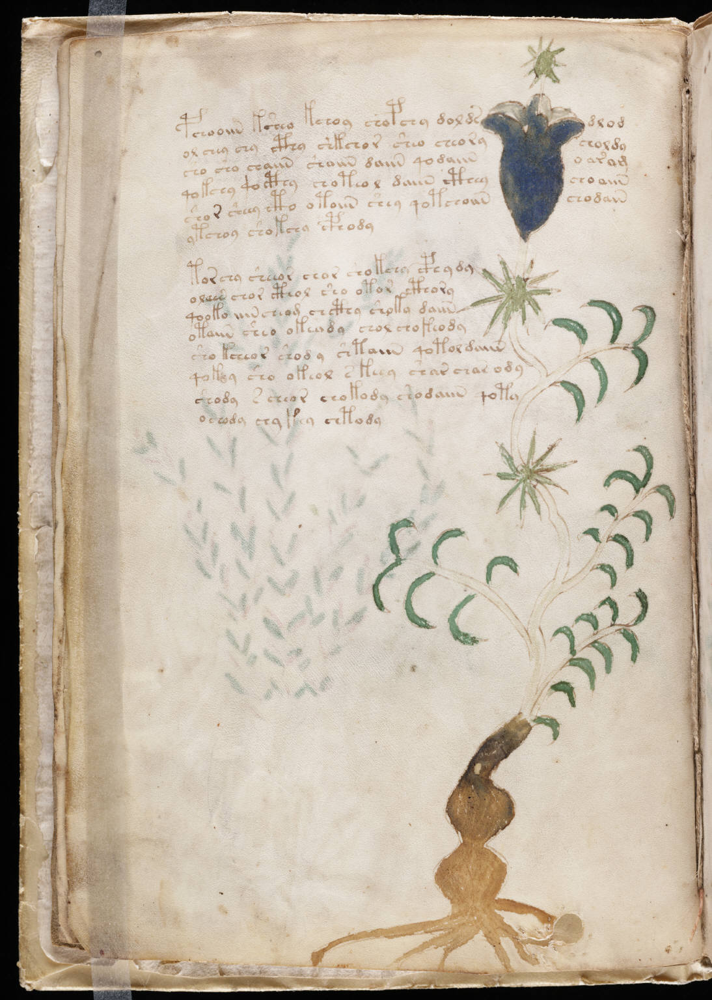

f4v
1pchooiin ksheo kchoy chopchy doldsdlod2ol chey chy cthy shkchor sheo cheorycholdy3sho sho chaiin shaiin daiin qodaiino ar am4qokshy qocthy choteol daiin ctheychoaiin5shor sheey cto otoiin shey qotchoiinchodain6ytchoy shokchy cphody7torchy sheeor chor shokchy cphydy8olaen chor cthol sho otor cthory9qooko iiincheom chcthy shoky daiin10otaiin sheo okeody chol chokeody11sho kcheor shody shtaiin qotol daiin12qokoy sho okeol s keey shar char ody13shody s cheor chokody shodaiin qoty14ochody chykey chtody
